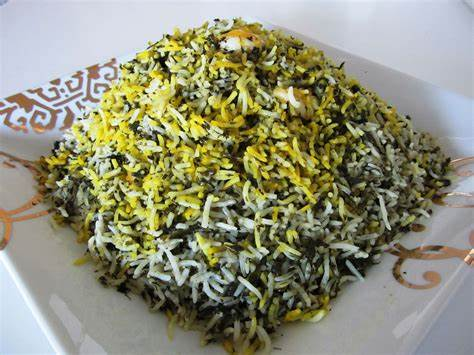

Best Sabzi Polo

بهترین سبزی پلو
سبزی پلو به همراه ماهی یا مرغ سرو شده و به همراه سیر تازه، یکی از غذاهای بسیار خوشمزه ایرانی خصوصا در فصل سرما محسوب می شود.
مواد لازم
- برنج ۴۰۰ گرم
- کره ۱۰۰ گرم
- سبزی پلو پاک شده ۵۰۰ گرم
- نان لواش یا سیب زمینی برای تهدیگ به مقدار لازم
- زعفران دم کشیده نیم استکان
- دارچین ۱ قاشق غداخوری
- نمک ۱ و نیم قاشق غداخوری
دستور پخت
- برنج را شسته و از 2 ساعت قبل از طبخ، با نمک خیس کنید.
- در یک قابلمه آب را جوش آورده و سپس برنج را به آن اضافه کنید. وقتی مغز برنج از شکنندگی بیرون آمد ولی هنوز کاملا نرم نبود، سبزی پلو را به آب برنج اضافه کرده و در قابلمه با برنج هم بزنید تا سبزی لا به لای برنج پخش شود. مخلوط سبزی و برنج را بلا فاصله بعد از اینکه با برنج مخلوط شد، در سبد آبکش ریخته و روی برنج یک بار مقداری آب سرد بریزید تا نمک اضافی برنج شسته شود.
- روغن مایع را ته قابلمه ریخته و نان لواش یا سیب زمینی حلقه شده را کف قابلمه برای ته دیگ قرار دهید. با کفگیر از برنج و سبزی مخلوط شده روی ته دیگ ریخته و سپس مقدار کمی زعفران حل شده در آب جوش و نیز کمی دارچین روی برنج بپاشید. سپس باقی برنج و سبزی را تا وسط قابلمه پر کرده و مجددا کمی دارچین و زعفران به برنج اضافه کنید. در آخر قابلمه را با باقی برنج و سبزی پر کنید. و مجددا باقی زعفران و دارچین را به برنج اضافه کنید.
- با کفگیر چند سوراخ عمیق در برنج ایجاد کرده و کره آب کرده به همراه نصف استکان آب را با کفگیر سوراخ دار، روی برنج بریزید. قابلمه را روی حرارت متوسط مایل به زیاد قرار دهید. وقتی برنج دم داد و بخار آن بالا آمد، زیر قابلمه را کم کرده و زیر در قابلمه یک دمکنک قرار دهید تا برنج به مدت 1 ساعت و بیست دقیقه دم کشیده و ته دیگ آن آماده شود.
سبزی پلو به همراه گوشت ماهیچه، مرغ یا ماهی سرخ شده سرو می شود. نوش جان.
بازگشت